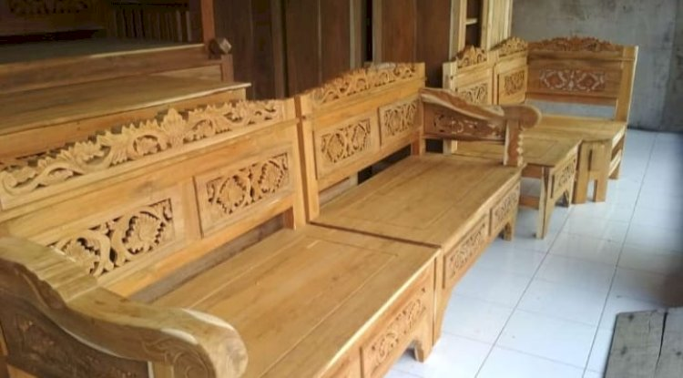
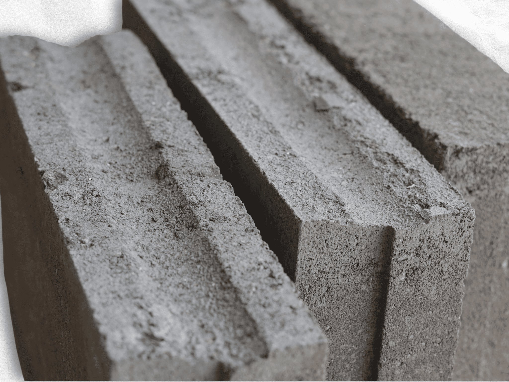
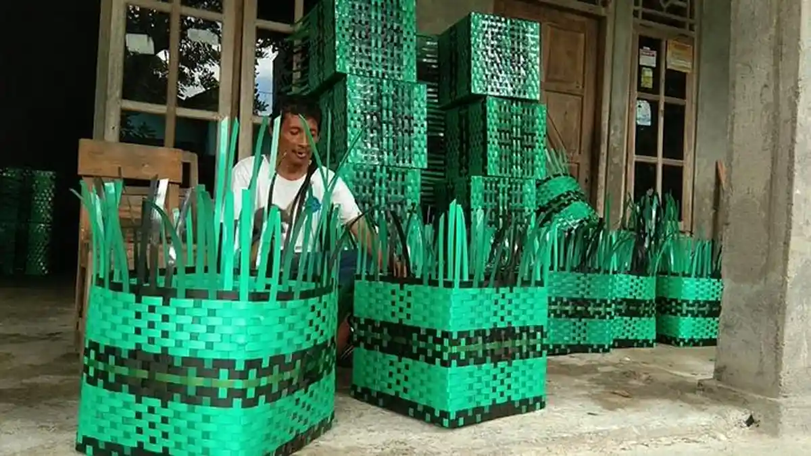

Mendukung produk lokal karya warga desa untuk perekonomian yang mandiri dan berdaya saing.

Produksi mebel kayu berkualitas tinggi yang dikerjakan langsung oleh pengrajin desa. Menghasilkan perabotan rumah tangga dan kantor yang kuat, awet, serta memiliki nilai seni.

Usaha pembuatan batako press kokoh dengan standar kualitas yang terjaga. Membantu memenuhi kebutuhan material pembangunan warga desa maupun wilayah sekitarnya dengan harga bersaing.

Kreativitas warga dalam menyulap bahan plastik menjadi produk fungsional bernilai jual seperti tas dan keranjang. Produk ini terkenal kuat, unik, dan ramah lingkungan.